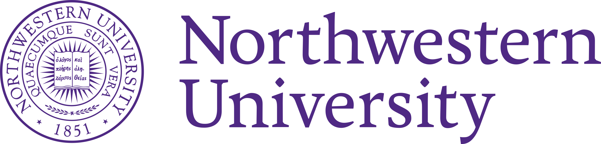

Delaram Heydarian
PhD Candidate Operations Research Northwestern IEMS
I'm Delaram Heydarian, a fifth-year Ph.D.candidate in Industrial Engineering and Management Sciences at Northwestern University, advised by Prof. Achal Bassamboo and Prof. Seyed MR Iravani.
I am on the academic job market for 2026-27.
My research interests are broadly in Operations Management, stochastic systems, service operations, and queueing theory. I study how customers and service systems interact when service resources differ in speed, capacity, or operating characteristics, with a particular interest in decentralized customer decisions, routing, congestion, and system design.
My current research focuses on service systems with heterogeneous servers and heterogeneous customers. In particular, I study how customers choose between service alternatives, how these individual decisions generate equilibrium behavior, and how decentralized outcomes compare with socially optimal routing policies. My work combines queueing theory, stochastic modeling, equilibrium analysis, optimization, and simulation.
One of my main research projects studies checkout externalities in service systems with fast and slow servers, motivated by settings such as traditional cashier checkout and self-checkout. The project examines customer routing under unobservable congestion, Wardrop equilibrium behavior, and socially optimal system design when customers have different basket sizes and service requirements.